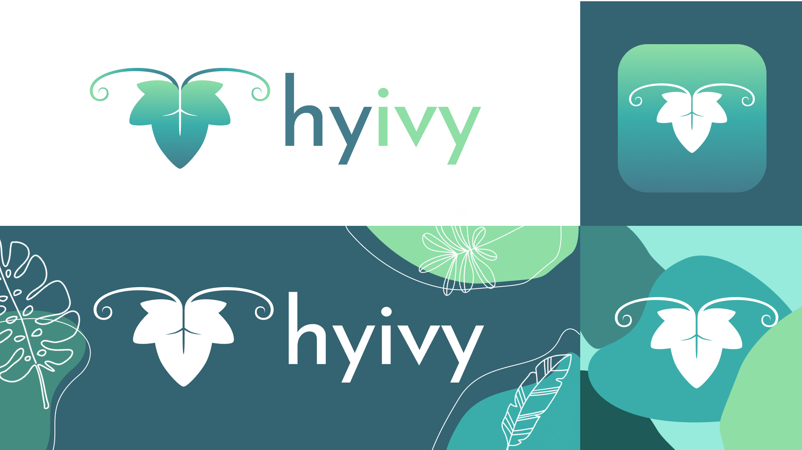

ROLE
Product Designer
SETTING
Team of 11, consisting of researchers, developers, and engineers
(I was the only designer)
TIMELINE
April - August 2020
(4 months)
mobile app design & 3D product design
May - August 2020
Product Designer
Team of 11, consisting of researchers, developers, and engineers
(I was the only designer)
April - August 2020
(4 months)
Hyivy health is a femtech startup aiming to create a rehabilitation device with trackable data for women who have pelvic cancers and diseases. The goal of the device is to help alleviate pelvic health symptoms in women.

1 in 3 women will have pelvic health problems in their lifetime. After a devastating diagnosis, treatment or surgery, the recovery process for women is extremely difficult, painful, confusing, and not streamlined.
How might Hyivy create an intelligent and holistic pelvic rehabilitation for women?
With the goal to provide women with an intelligent and holistic pelvic rehabilitation, the development of a smart multi-functional device was initiated.
Based on the founder’s personal experience with pelvic cancer and extensive user research, the device’s goal is to replace the many different products a patient has to purchase during her recovery. The device will perform all the tasks needed to provide the patients with every kind of therapy she needs throughout her recovery:
To make the therapy process more streamlined, informative and rewarding, Hyivy also plans to develop a mobile app that works alongside the device to provide trackable data and educational support.
To better understand our users, their stories battling cancer, and their current experiences with therapies. The team and I conducted user interviews with 5 pelvic cancer patients from across the world: Canada, US, Japan, and France. To ensure we captured an accurate and complete picture of womanhood and women's experiences, we interviewed both cisgender and transgender women.
Women need a safe, trustworthy, informative and comforting set of products during a time they are most fearful and vulnerable. Hyivy’s solution to providing women with a more streamlined and comfortable recovery experience is through a multifunctional therapy device as well as a mobile app. Together, the connected smart device provides real time information to give women the most comfortable and informed experience through their pelvic health recovery.
This app was intended to be used with the medical device Hyivy is planning to release. During therapy sessions, the app will receive data from the device and display it in a user-friendly way, giving the patients real-time feedback on their therapy. The app can also be used to track processes, review previous session records as well as serve educational purposes to those new to the therapy.
In order to create the initial design of the application, I created a user flow diagram to shape out the information architecture that will ultimately determine the structure of the app.
After getting the user flow diagram approved with the team, I started the wireframing process. I experimented on a variety of different structural frameworks and layouts to capture the overall visual approach of the app. All final decisions of the wireframes were made to minimize complexity and reduce possible confusion as the majority of our target users are of older age.
A simple and friendly dashboard with a personalized greeting, designed to appeal to our target audience (mid-age to senior women).
Design Decision:
Going through cancer treatments is tough. That’s why friendliness and positivity is such an important criteria for this app. When first opening the app, the user immediately receives a warm personalized greeting by the app, which makes their using experience much less dry and depressing. The colour coded tabs and large icons were also designed to help reduce confusion in the not so tech-savvy population.

The My Device tab not only makes the process of connecting to a device easy and intuitive, once connected, it will also display information about the specific models connected, and alert the user if refills or recharge is needed.
Design Decision:
Abiding to Hick’s law, the single “connect” CTA on the entire page greatly reduces the time users spend making a decision, thus speed up the device connection process. The graphical display of product information makes the content easy to consume. Since the users will have the device in hand when using this app, it is much easier to make the link between the diagram and the device than between the part names and the device.
This is where all the core functions of the app are delivered. The “Sessions & Records” section of the app keeps track of the user’s scheduled therapy sessions and alerts them if one is coming up. During a therapy session, it keeps track of a timer and displays live data transmitted from the device, such as temperature, proximity, pressure, and humidity. It also keeps a record of the past therapy sessions, which the user can look back on to see the improvements they have made or adjust the therapy to better fit their recovery.

Design Rationale:
This section is made to target the patients who are feeling confused and are seeking support, which is the case for most people going through treatment.
Talking to people with similar experiences is a crucial way to reduce anxiety and depression among pelvic disease patients. The Blog allows them to connect to each other and become educated on their disease and treatments.
Rationale:
As we learned from our user interviews, some patients abandon treatment midway because they do not see any progress or they are simply depressed.
I designed a simple and cute game that gives rewards both as in-game collectives and as real-life coupons in order to encourage patients to continue their treatment. The game’s aesthetics are very simplistic and cute, which appeals to the target group of users.
Hyivy Health’s device are meant to create an intelligent and holistic pelvic rehabilitation experience for women. The device is meant to perform many tasks such as dilation, medicine application, as well as perform hot and cold therapy.
Although the internal systems are not designed by me, I designed the entire outer appearance that encases the inner systems.

To generate a design and a 3D prototype for the Hyivy device, I studied the very early-stage minimal design that were put together by the engineerng team as well as conducted extensive market research on the competitor products. I then sketched out the ideas I had for the appearance of the product.
After iterations of feedbacks and suggestions, the final design was determined based on its unique look and ergonomic shape. I built the prototypes using Fushion 360, which was followed by more iterations of minor design changes.
The curved shaft and tip design allows the patient to reach the cervix easily so medication and lubrication can be directly delivered and applied. The sensors are also located at the tip of the device, collecting and displaying real-time data to the user, such as temperature, proximity, and pressure.
The handle of the device points toward the user during therapy, which makes it easier to hold and control.
The buttons lay on top of the handle, also directly facing the user, can be accessed easily with the thumb. The symbols on the buttons makes it easy to understand and intuitive to use. The extrusion of the symbols also allow it to be easily identified without looking at the device. The LED lights inside the buttons makes it possible to navigate them in darker environments.
The 5 LED lights on top of the device identifies what mode the device is in as well as the intensity the device is delivering. The location makes them easy to identify even in dark environments.
The POD contains medication or lubrication, which can be punctured and delivered through the tip of the device. Its slot is located on the back of the device, which lowers the chance of it being accidentally open or getting dirty.
The inner mini electric pump can inflate the silicon shaft to act as an adjustable dilator. This function eliminates the patient's need to purchase a whole set of different sized dilators, which makes it easier for the patients when they are travelling or on the move.
The 2 metal rings on the shaft of the device can heat up and cool down to perform heat and cold therapy, which both have significant impact on relieving pain and discomfort. This function gets rid of the need to heat up a dilator with warm or cold water, which can be inconvenient and time consuming.
Since Hyivy was at such an early stages of a startup, the first things I had to work on was building a brand identity. I experimented with many different elements and colours for the branding of Hyivy as my boss simply suggested me to go wild. However, I did make up my own themes to follow in order to create a consistent yet vibrant brand image. I focused on including some plant elements to echo the "ivy" in the logo while trying to reflect a free, positive and trustworthy energy. After iterations and a final voting, the design below was determined to represent Hyivy.
In colour theory, green is a colour that represents health, whereas blue represents trustworthiness. Teal is the result of mixing green and blue, which is the main colour I decided to go with.
The logo is an ivy leaf with two ivy vines extending from its base, which echoes the company’s name “Hyivy”. The upside down shape of the ivy leaf is symbolic of the uterus, and the ivy vines represent fallopian tubes and ovaries. The uterus as the logo reinforces the mission statement of Hyivy and upholds our feminist values. At Hyivy, we want to create the most comfortable experience for patients with pelvic health issues. Part of that involves destigmatizing talking about women's reproductive organs. Displaying a uterus as the logo is a bold statement in a society that considers women's body parts as taboo and hypersexualized.
Although I did conduct user testings during my time working, they are far from the last ones! More iterations, volunteers, and tests will only provide more validation or new findings of pain points.
Another next step would be to identify key metrics post-launch, to measure usability and success. This can help us validate or challenge some of the assumptions made during the process.
Developing a physical electronic product is a LOT of work: material sourcing, system designing, getting medical approval, sorting out user privacy security. The future has a lot in store for the startup.
I really don’t have to stress the importance of user research as everyone probably knows its value. However, I found conducting user research not only as a designer, but as an entire team was extremely effective in putting everyone on the same page and fixated to solve the same problems.
I found that with more communication, the relationship between co-workers becomes closer and meetings become more fruitful as people are more open to sharing their ideas. Since the pandemic, it’s becoming harder to establish that close team dynamics, therefore more casual meetings is very helpful!
While heuristics and principles can be useful, user feedback is what puts the human element into design. During this coop, I have learned how to structure and conduct usability tests. And while working closely with a cancer patient, I found that constantly asking for her feedback was a great way for ensuring I am building a useful solution and to discover problems with my design.